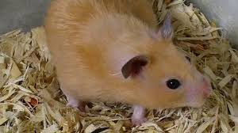

El hámster sirio (también llamado hámster dorado) es un roedor solitario y territorial, nativo de Siria, que utiliza bolsas en sus mejillas para almacenar comida y construyen madrigueras complejas. Viven entre 2 y 3 años y son de color original dorado, aunque existen otras variedades de pelaje. A pesar de ser generalmente dóciles con los humanos, pueden ser muy agresivos con otros de su especie, por lo que se recomienda mantenerlos solos en casa.
